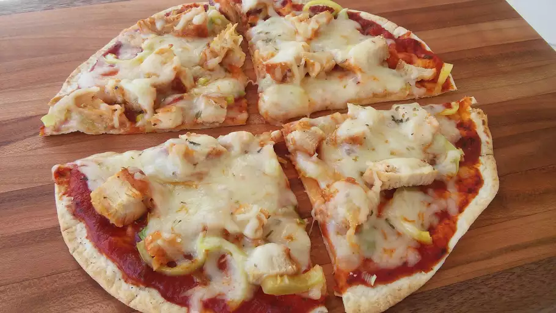

Odin recipes
home
Pizza

Short on time? Try this tortilla pizza recipe. It comes together quickly and easily with just a few cheap ingredients.
Ingredients
- Tortilla
- Oil
- Seasonings
- Tomato sauce
- Toppings
- Cheese
Steps
- Brush the tortilla with olive oil, season, and bake
- Top with tomato sauce and toppings, sprinkle it with cheese
- bake again until the cheese is melted